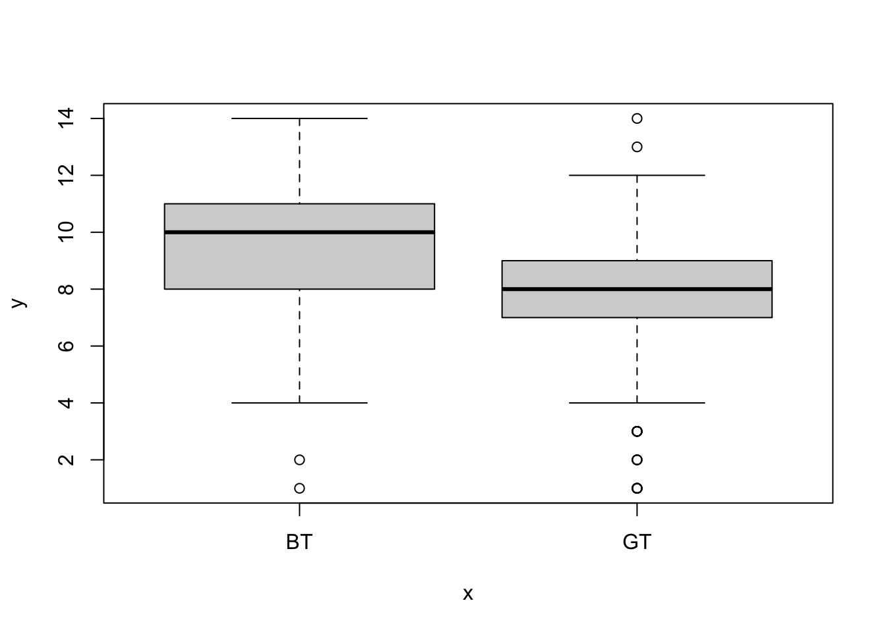
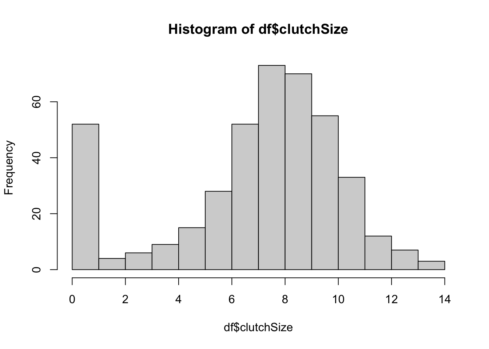
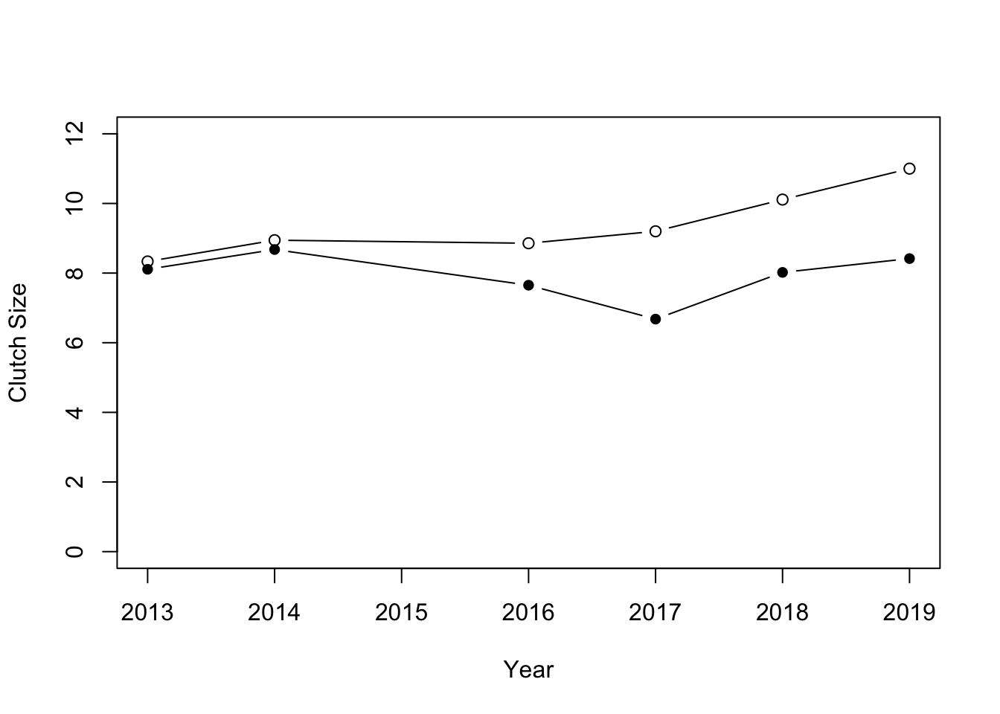

Chapter 5 Data wrangling with dplyr
This chapter focuses on using the package dplyr, which is designed to make working with data in R easier.
The package has several key “workhorse” functions, sometimes called verbs. These are: filter, select, mutate, arrange and summarise. I covered these in the lecture, and they are also discussed in the textbook. This chapter guides you through worked examples to illustrate their use.
We will also be using pipes from the magrittr package. These are implemented using the command %>%.
library("dplyr")
library("magrittr")To get to know dplyr and its functions we’ll use a data set
collected from the university campus at University of Southern Denmark (SDU) The SDU bird project follows the fate of mainly great tits (musvit) and blue tits (blåmejse) in about 100 nest boxes in the woods around the main SDU campus.
We will address two questions concerning clutch size (the number of eggs laid into the nest) -
- How does clutch size differ between blue tits and great tits?
- How does average clutch size vary among years?
To answer these questions we need to calculate the average clutch size (number of eggs) for each nest in each year. The data are in a file called (sduBirds.csv) and are raw data collected while visiting the nests. The data will need to be processed to answer those questions.
Let’s import the data and take a look at it. Make sure your data looks OK before moving on.
You should first set up your working directory (e.g. a folder for the course, with a sub-folder for course data etc.), and set it (with setwd)).
See the earlier material for how to do this, or ask for help.
df <- read.csv("CourseData/sduBirds.csv")
str(df)## 'data.frame': 9357 obs. of 15 variables:
## $ Timestamp : chr "2013-05-14" "2013-05-03" "2013-06-25" "2013-06-18" ...
## $ Year : int 2013 2013 2013 2013 2013 2013 2013 2013 2013 2013 ...
## $ Day : int 134 123 176 169 112 112 116 183 143 107 ...
## $ boxNumber : int 1 1 1 1 1 1 1 1 1 1 ...
## $ species : chr "BT" "BT" "BT" "BT" ...
## $ stage : chr "NL" "NL" "NE" "NE" ...
## $ nEggs : int 12 8 0 0 0 0 0 0 NA 0 ...
## $ nLiveChicks: int 0 0 0 0 0 0 0 0 0 0 ...
## $ nDeadChicks: int 0 0 0 0 0 0 0 0 0 0 ...
## $ eggStatus : chr "WA" "CO, CV" NA NA ...
## $ chickStatus: chr NA NA NA NA ...
## $ adultStatus: chr "FN" "FN" NA NA ...
## $ finalStatus: chr NA NA "NE" "NE" ...
## $ Comments : chr NA "MA" NA NA ...
## $ observerID : chr "AMK" "AMK" "AMK" "AMK" ...5.1 select
From the str summary (above) you can see that there are many columns in the data set and we only need some of them. Let’s select only the columns that we need for our calculations to make things a bit easier to handle. We need the species, Year, Day, boxNumber and nEggs:
df <- select(df, species, Year, Day, boxNumber, nEggs)
head(df)## species Year Day boxNumber nEggs
## 1 BT 2013 134 1 12
## 2 BT 2013 123 1 8
## 3 BT 2013 176 1 0
## 4 BT 2013 169 1 0
## 5 BT 2013 112 1 0
## 6 BT 2013 112 1 0The output of head shows you the first few rows of the data set. You can see that each row represents a visit of a researcher to a particular nest. The researcher records the bird species if it is known (GT = Great tit, BT = Blue tit, NH = Nuthatch etc.), and then records the number of eggs, number of chicks, activity of the adults and so on. We need to convert this huge dataset into one which contains clutch size for each nest, for each year of the study.
The information given by str (above) shows that there are data on species other than our target species. We are only interested in the great tits and blue tits so we can first filter the others out using the species variable.
We can check what the make up of this part of the data is using the table function which will count up all of the entries.
table(df$species)##
## BT GT MT NH WR
## 992 4612 73 31 55.2 filter
Now let’s filter this data and double check that this has worked:
df <- filter(df,species %in% c("GT","BT"))
table(df$species)##
## BT GT
## 992 4612You will notice that all the levels of the variable are retained. This is not a problem, and can usually be ignored. You can also tidy this up using the droplevels function, which removes all unused factor levels.
df <- droplevels(df)
table(df$species)##
## BT GT
## 992 46125.3 arrange
Recall that the data are records of visits to each nest a few times per week. To ensure that the data are in time order I can first arrange by first Year and then Day. To illustrate this we can make a temporary data set (called temp) to look at a particular nest in a particular year to get a record of the progress for that particular nest, and then plot it (this is an ugly plot and we will learn how to make beautiful ones soon):
df <- arrange(df,Year,Day)
temp <- filter(df,boxNumber == 1,Year == 2014)
max(temp$nEggs) # get the max value## [1] 12plot(temp$Day,temp$nEggs,type="b")
Eggs are usually laid one per day, and the clutch size is the maximum number of eggs reached for each nest box. In this case, the clutch size is 12 eggs. The rapid decline in number of eggs after this peak value shows when the eggs have hatched and the researcher finds chicks instead of eggs!
5.4 summarise and group_by
The next part is the crucial part of our investigation. We need to get the maximum number of eggs seen at each nest. Of course we could repeatedly use filter, followed by max, for each nest-year combination but this would be incredibly tedious.
Instead, we will use the dplyr function, summarise, to do this by asking for the maximum value of nEggs. To make this work we need to first use the group_by function tell R to group the data by the variables we are interested in. If we don’t do this we just get the overall maximum. We can ungroup the data using the ungroup function.
Because there are missing data (NA values) we need to specify na.rm = TRUE in the argument.
So first, let’s get the max per species, just to illustrate how this works:
df <- group_by(df,species)
summarise(df,clutchSize = max(nEggs,na.rm= TRUE))## # A tibble: 2 x 2
## species clutchSize
## <chr> <int>
## 1 BT 14
## 2 GT 14We can see how the data are grouped by asking for a summary:
summary(df)## species Year Day
## Length:5604 Min. :2013 Min. : 60.0
## Class :character 1st Qu.:2014 1st Qu.:116.0
## Mode :character Median :2014 Median :133.0
## Mean :2015 Mean :133.2
## 3rd Qu.:2017 3rd Qu.:148.0
## Max. :2019 Max. :212.0
##
## boxNumber nEggs
## Min. : 1.00 Min. : 0.000
## 1st Qu.: 29.75 1st Qu.: 0.000
## Median : 57.00 Median : 0.000
## Mean : 55.83 Mean : 2.326
## 3rd Qu.: 85.00 3rd Qu.: 4.000
## Max. :101.00 Max. :14.000
## NA's :613We can ungroup the data again like this:
df <- ungroup(df)So both species lay the same maximum number of eggs, but maybe this is just caused by outliers for one of the species. We’ll need to dig deeper.
How can we calculate the average? We cannot simply ask for the mean because the data run through time following the development in each nest. We need to calculate the maximum nEggs for each nest, and then calculate the average of those. We can do this in two steps.
We first calculate the clutch size for each box for each species in each year:
df <- group_by(df, species, Year, boxNumber)
df <- summarise(df, clutchSize = max(nEggs,na.rm= TRUE))Let’s first look at all the clutch size data:
hist(df$clutchSize)
You can see here that there are a lot of zero values. This is because nests were recorded even if they did not attempt to lay eggs. We should remove these from our data using filter again:
df <- filter(df, clutchSize > 0)
hist(df$clutchSize)
That looks better. Now we can plot them again but this time split apart the species (again - this plot is ugly and we’ll learn to plot nicer ones soon).
plot(as.factor(df$species),df$clutchSize)
From these distributions it looks like the average clutch size is greater in the blue tit. We can use summarise to calculate the means.
df <- group_by(df,species)
summarise(df, mean = mean(clutchSize),sd = sd(clutchSize))## # A tibble: 2 x 3
## species mean sd
## <chr> <dbl> <dbl>
## 1 BT 9.64 2.64
## 2 GT 7.89 2.19Lets now turn to the other question - how does the clutch size vary with year?
df <- group_by(df,species,Year)
df2 <- summarise(df, meanClutchSize = mean(clutchSize))
head(df2)## # A tibble: 6 x 3
## # Groups: species [1]
## species Year meanClutchSize
## <chr> <int> <dbl>
## 1 BT 2013 8.33
## 2 BT 2014 8.94
## 3 BT 2016 8.86
## 4 BT 2017 9.2
## 5 BT 2018 10.1
## 6 BT 2019 11We can plot this by first making a plot for blue tits, and then adding the points for great tits. I have used the pch argument to use filled circles for the great tits:
plot(df2$Year[df2$species == "BT"],df2$meanClutchSize[df2$species == "BT"],type="b",
ylim=c(0,12),xlab="Year",ylab="Clutch Size")
points(df2$Year[df2$species == "GT"],df2$meanClutchSize[df2$species == "GT"],
pch = 16, type="b")
So it looks like the clutch size varies a fair amount from year to year, but that generally blue tits have large clutch sizes than great tits.
5.5 Using pipes, saving data.
I have walked you through a step-by-step data manipulation. During that process you made made (and replaced) new data sets at each step. In practice this can be done more smoothly using pipes (%>%) to pass the result of one function into the next, and the next, and the next…
You’ll get some more practice with this as we go on. Below I show how do do this to create a clutch size data set from the raw data (note that your file path will differ from mine):
#Import and process data using pipes
SDUClutchSize <- read.csv("CourseData/sduBirds.csv") %>%
filter(species %in% c("GT","BT")) %>% #include only GT and BT
droplevels() %>% #drop unwanted factor levels
select(species, Year, Day, boxNumber, nEggs) %>% #select columns needed
group_by(species, Year, boxNumber) %>% #group data
summarise(clutchSize = max(nEggs,na.rm=TRUE)) %>% #calculate clutch size (max eggs)
filter(clutchSize > 0)
head(SDUClutchSize)## # A tibble: 6 x 4
## # Groups: species, Year [1]
## species Year boxNumber clutchSize
## <chr> <int> <int> <dbl>
## 1 BT 2013 1 12
## 2 BT 2013 5 8
## 3 BT 2013 27 10
## 4 BT 2013 31 6
## 5 BT 2013 35 10
## 6 BT 2013 37 8You can save this out using the write.csv function. You will need to set the argument row.names = FALSE to stop the data including row names.
write.csv(x = SDUClutchSize,file = "CourseData/SDUClutchSize.csv",row.names = FALSE)5.6 Exercise: Wrangling the Amniote Life History Database
In this exercise the aim is to use the “Amniote Life History Database”4 to investigate some questions about life history evolution.
The questions are: (1) what are the records and typical life spans in different taxonomic classes? [what is the longest, shortest and median life span in birds, mammals and reptiles?] (2) is there a positive relationship between body mass and life span? [do big species live longer than small ones?]; (3) is there a trade-off between reproductive effort and life span? [do species that reproduce a lot have short lives, so there is a negative relationship between reproduction and life span?]; (4) is this trade-off universal across all Classes? [does the trade-off exist in birds, reptiles and amphibians?]
The database is in a file called Amniote_Database_Aug_2015.csv in the course data folder. The missing values (which are normally coded as NA in R) are coded as “-999”. The easiest way to take care of this is to specify this when we import the data using the na.strings argument of the read.csv function. Thus we can import the data like this:
amniote <- read.csv("CourseData/Amniote_Database_Aug_2015.csv",na.strings = "-999")Let’s make a start…
When you have imported the data, use
dimto check the dimensions of the whole data frame (you should see that there are 36 columns and 21322 rows). Usenamesto look at the names of all columns in the data inamniote.We are interested in longevity (lifespan) and body size and reproductive effort and how this might vary depending on the taxonomy (specifically, with Class). Use
selectto pick relevant columns of the dataset and discard the others. Call the new data framex. The relevant columns are the taxonomic variables (class,genus&species) andlongevity_y,litter_or_clutch_size_n,litters_or_clutches_per_y, andadult_body_mass_g.Take a look at the first few entries in the
speciescolumn. You will see that it is only the epithet, the second part of the Genus_species name, that is given.
Usemutateandpasteto convert thespeciescolumn to a Genus_species by pasting the data ingenusandspeciestogether. To see how this works, try out the following command,paste(1:3, 4:6). After you have created the new column, remove thegenuscolumn (usingselectand-genus).What is the longest living species in the record? Use
arrangeto sort the data from longest to shortest longevity (longevity_y), and then look at the top of the file usingheadto find out. (hint: you will need to use reverse sort (-)). Cut and paste the species name into Google to find out more!Do the same thing but this time find the shortest lived species.
Use
summariseandgroup_byto make a table summarisingmin,medianandmaxlife spans (longevity_y) for the three taxonomic classes in the database. Remember that you need to tell R to remove theNAvalues using arm.rm = TRUEargument.Body size is thought to be associated with life span. Let’s treat that as a hypothesis and test it graphically. Sketch what would the graph would look like if the hypothesis were true, and if it was false. Plot
adult_body_mass_gvs.longevity_y(using base R graphics). You should notice that this looks a bit messy.Use
mutateto create newlog-transformed variables,logMassandlogLongevity. Use these to make a “log-log” plot. You should see that makes the relationship more linear, and easier to “read”.Is there a trade-off between reproductive effort and life span? Think about this as a hypothesis - sketch what would the graph would look like if that were true, and if it was false. Now use the data to test that hypothesis: Use
mutateto create a variable calledlogOffspringwhich is the logarithm of number of litters/clutches per year multiplied by the number of babies in each litter/clutch . Then plotlogOffspringvs.logLongevity.To answer the final question (differences between taxonomic classes) you could now use
filterto subset to particular classes and repeat the plot to see whether the relationships holds universally.
Remember that if you struggle you can check back to previous work where you have used dplyr commands to manipulate data in a similar way. If you get truly stuck, ask for help from instructors or fellow students.